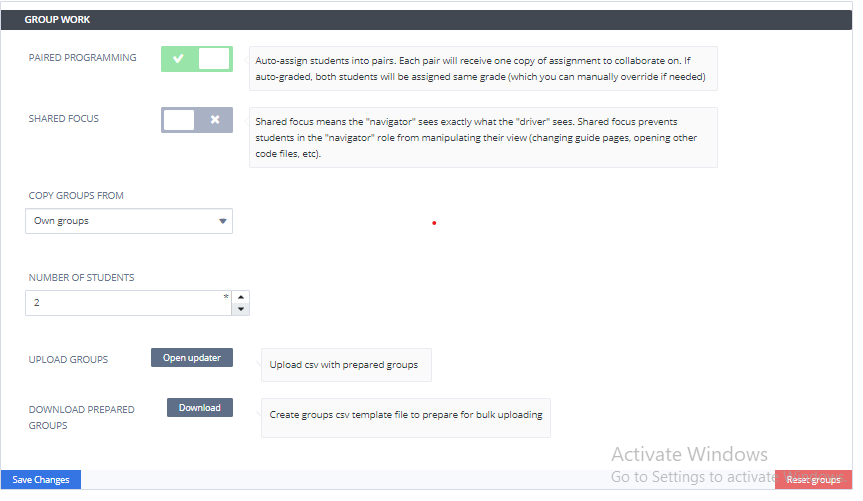
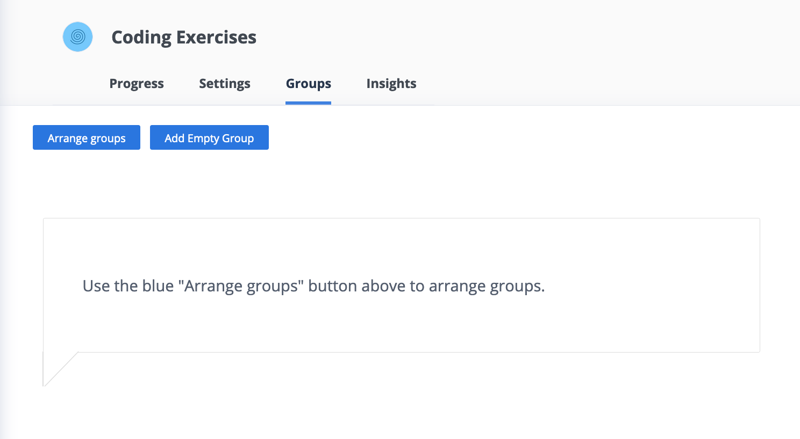

Pair Programming¶
The Paired Programming setting is enabled to allow groups of students to work together on assignments. Within each group a student will be a Driver who has the ability to edit and make changes in the assignment and others in the group will be Navigators who can view the work done by the Driver. Control can be passed between the driver and navigators as required. See below

Paired Programming - Enable to auto-assign students into groups. Groups can be between 2 and 5 students. See below
Shared Focus - Enable to apply Shared Focus. Shared focus means the “navigator” sees exactly what the “driver” sees. This prevents a student in the “navigator” role from manipulating the view of the driver (changing guide pages, opening other code files, etc) and as the driver moves around in the assignment, the navigator view will change to follow.
Copy Groups From - Allows you to use Pair Programming groups already set up in other assignments. As other assignments are enabled for Pair Programming, each of those assignments will show in the drop down.
Note
If an assignment has Copy Workspace configured and both the ‘to be copied from’ and ‘to be copied to’ assignments are pair programming assignments, groups will be automatically copied.
Number of Students - Set the number of students to work together as a group (max 5). If the total number of students is greater than an equal division for the groups, extra groups will be created
Uploads Groups - Allows you to upload/arrange student groups in bulk using a CSV file, for more information check out Batch Groups Upload
Note
Both the Prime Assignment setting and the Pair Programming setting can not be enabled at the same time.
Warning
Pair Programming should not be used for Crunch, Flode, Jeroo, Scratch , Pencil Code, Draw.io, Pyret, Processing/p5, Jupyter notebook or assignments using virtual machine assignments.
Managing Groups¶
Once groups have been set up and saved, teachers/instructors can manage the groups by selecting the Groups tab. Select the Arrange Groups button to create initial groups automatically or to move students between the groups.
Note
Test students will not automatically be added to any groups. If you need them you can add them manually by dragging them from the Students area present at the right side and drop them into the respective groups.
You can also rename the groups. The Add Empty Group button can be used to create an empty group to move students into.

Adding New Students¶
If a new student joins the course after Pair Programming is enabled, they will automatically be added to any existing group that is not already at the maximum number of students. If all groups are already at the maximum number a new group will be created. Teachers/Instructors may then want to review the existing groups so there are no students operating on their own in their own group.